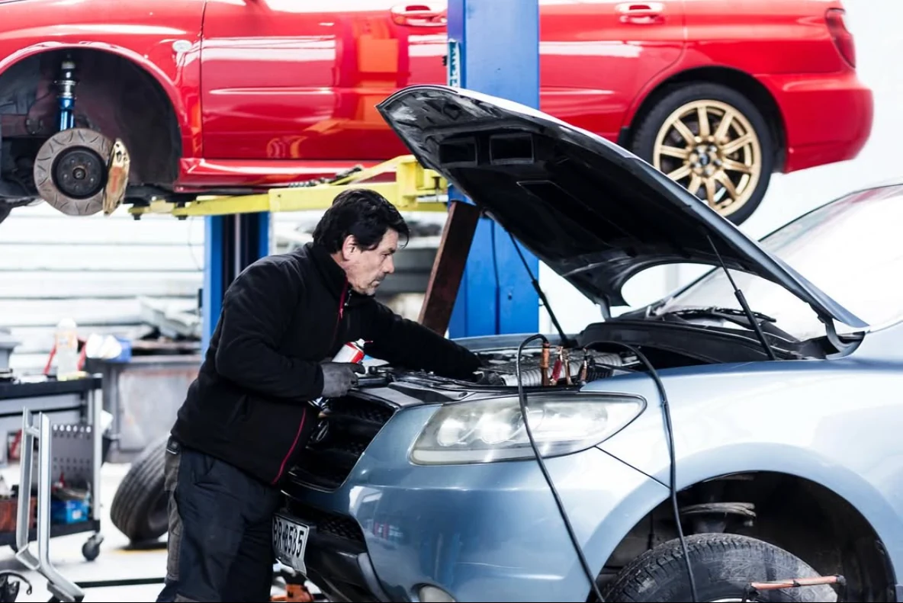

01 / MECÁNICA
Mecánica general
Diagnóstico y reparación de fallas: desde el mantenimiento preventivo hasta intervenciones complejas.
- Motor y transmisión
- Frenos y sistemas auxiliares
- Revisión según el síntoma